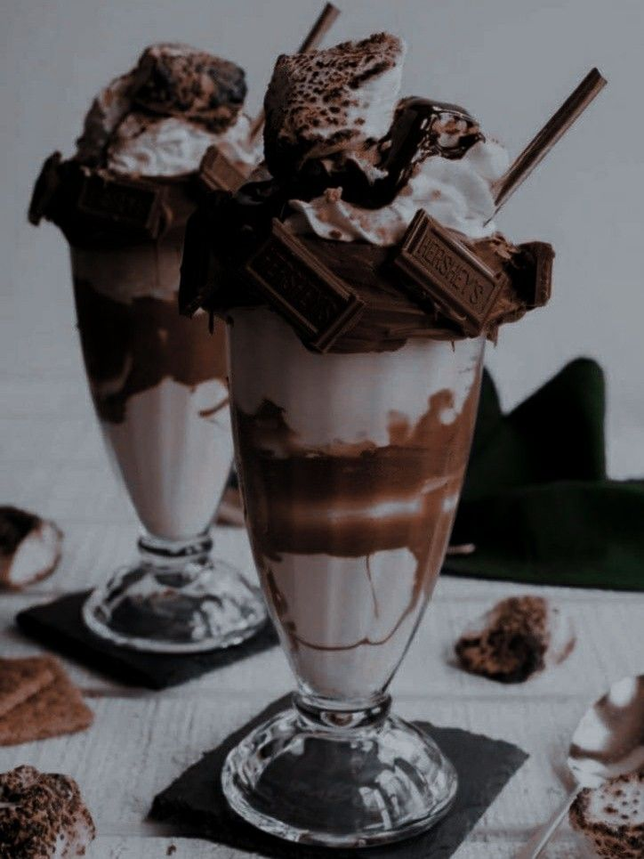
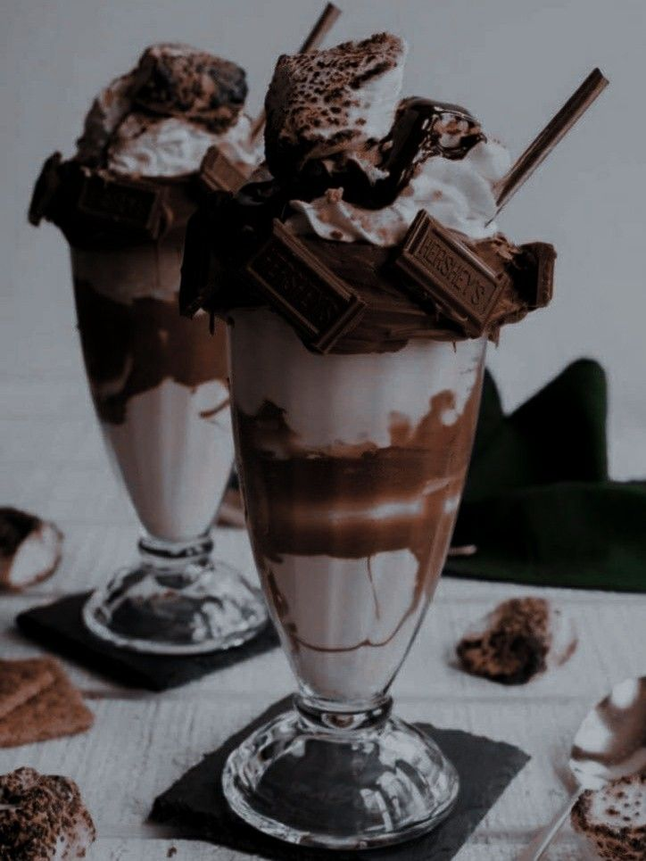

Cafe Florencia
Cafe FlorenciaTitulo
Café


Titulo
En nuestro café, podras disfrutas de las bebidas calientes más amadas por todo el mundo. Utilizamos cafés importados de Etiopía, Kenya e Indonesia. Molemos el café tostado en el momento, para una textura, un sabor y un aroma inigualables por cafes instantaneos o torrefactados. Para la degustación de dicha bebida, utilizamos una taza adecuada al tamaño y nos ajustamos a los gustos de nuestra clientela, porque cada cliente es único.
Muchos de nuestros clientes preieren disfrutar de un café solo, sin azucar ni leche ni chocolate, pero también hay clientes que disfrutan del aroma del chocolate, aprecian el toque dulce que le da el azucar o la nata montada. Con respecto a las leches, no seríamos una boutique de café si no tuvieramos una amplia selección. Entre ellas, se encuentra leche sin lactosa, leche de almenda, leche de vaca y en algunas de estas opciones también hacemos la distincción de leche entera, y semidesnatada.
 
